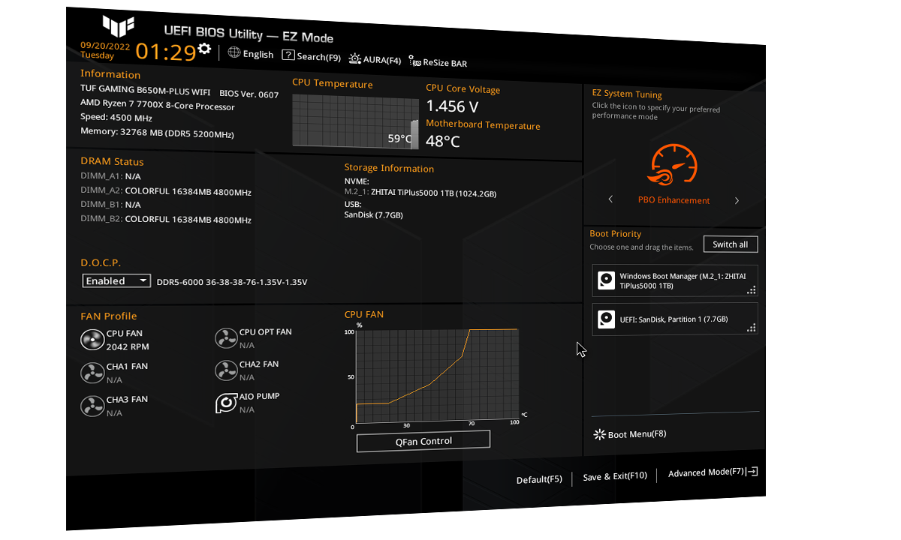

Ažuriranje BIOS-a može popraviti stabilnost raÄunala

BIOS je važan dio matiÄne ploÄe jer utjeÄe na podrÅ¡ku za procesore, memoriju i stabilnost sustava.
Ažuriranje može rijeÅ¡iti probleme s kompatibilnošću, ali ga treba raditi pažljivo i prema uputama proizvoÄ‘aÄa.
Korisnik prije postupka treba provjeriti toÄan model matiÄne ploÄe i preuzeti ispravnu verziju datoteke.